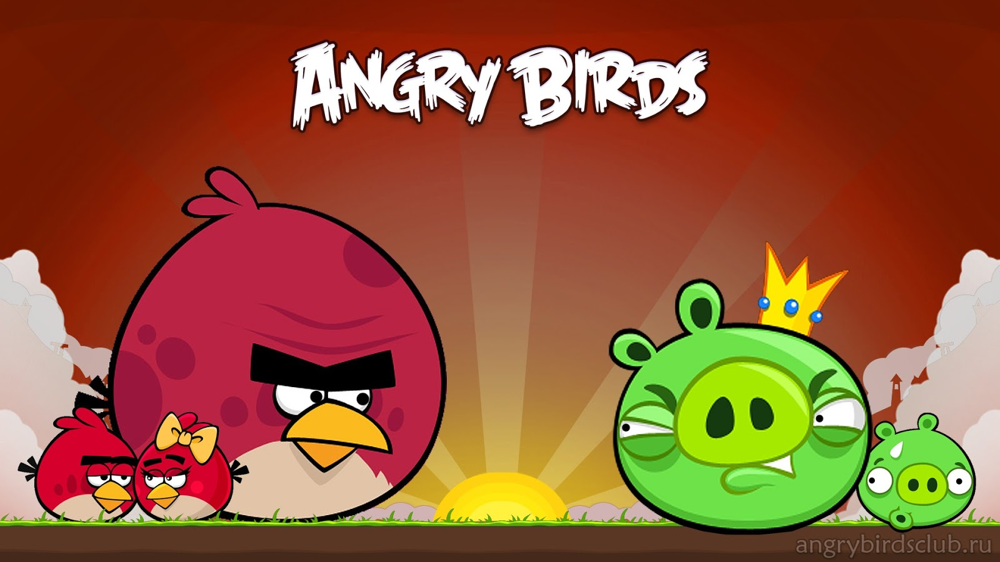
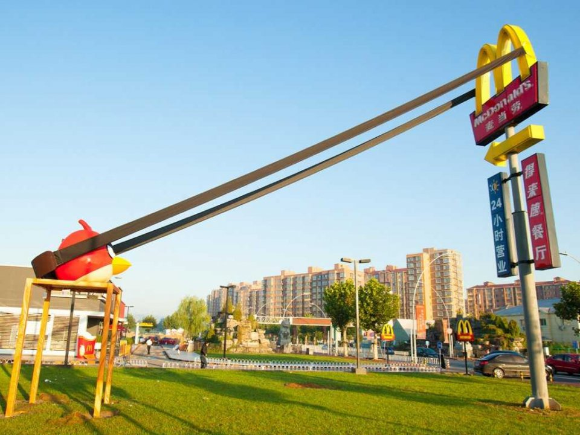

La storia
Angry Birds (letteralmente traducibile in italiano come Uccelli arrabbiati) è una serie di videogiochi rompicapo sviluppati da Rovio Mobile. Lo scopo principale di ogni gioco della serie è di lanciare dalla fionda alcuni uccelli di vario tipo contro una serie di maialini verdi ("piggie") posizionati all'interno del campo di gioco, costituito da varie strutture, con l'obiettivo di distruggerli. Questa sorta di "guerra" nasce dal fatto che, come viene mostrato nei filmati presenti nel gioco, i maialini hanno rubato le uova agli uccelli per cibarsene, e i volatili li vogliono eliminare per recuperare le uova e per vendicarsi. I diversi scenari di cui è composto il gioco, ognuno dei quali contiene un diverso numero di maiali, uccelli e strutture di varie forme, sono raggruppati in "episodi", ognuno dei quali ha un filmato introduttivo e un titolo. Ispirato da un semplice schizzo di uccelli stilizzati senza ali, il gioco è stato pubblicato, tramite app dedicata, originariamente per iPhone / IPod Touch. Da quel momento, oltre 12 milioni di copie del gioco sono state acquistate nell’App Store di Apple. L'azienda ha deciso di progettare versioni per altri smartphone touchscreen-based, compresi quelli che utilizzano Android e i sistemi operativi Symbian e Windows Phone.
 Torna su
Rovio Mobile ha sostenuto e sta sostenendo Angry Birds con numerosi aggiornamenti gratuiti che aggiungono man mano ulteriori contenuti del gioco. Tutti questi upgrade sono gratuiti e scaricabili direttamente dallo store del sistema operativo usato dal proprio cellulare, anche se alcune nuove funzionalità sono a pagamento (come la Mighty Eagle). La società ha creato altri giochi della serie, ad esempio in Angry Birds Seasons le ambientazioni omaggiano ricorrenze durante l'arco dell'anno (in principio si trattava soltanto di uno speciale dedicato ad Halloween, poi sono state introdotte altre ricorrenze). La versione 2.0 di Seasons ha introdotto la suddivisione in anni: tale versione ha raggruppato i precedenti sette episodi all'interno di una sezione denominata "Seasons 2011", ed ha inserito un nuovo episodio, "Ham'o'ween", all'interno di una sezione denominata "Seasons 2012" (nonostante ciò sia accaduto ad ottobre 2011). Da fine gennaio 2011, Angry Birds è disponibile in download in versione Minis di Sony PlayStation 3 e PSP riscuotendo un grande successo. A febbraio 2012, Rovio ha pubblicato una versione particolare del gioco sul popolare social network Facebook, dotata di alcune caratteristiche peculiari come l'acquisto di power-up a pagamento, quali i super-semi (che ad esempio aumentano le dimensioni degli angry bird) che sono poi stati inclusi anche nel gioco originale a partire da agosto 2012. Dal 23 maggio 2012 Angry Birds Facebook è stato aggiornato aggiungendo il Weekly Tournaments un torneo che ospita nuovi livelli in cui gli amici possono sfidarsi vincendo nuovi power-up ed ha cambiato il nome in Angry Birds Friends. Il 15 luglio 2012 è stato inoltre aggiunto un livello inedito chiamato Pigini Beach. Il 2 maggio 2013 la Rovio rilascia sull'App Store e sul Google Play Store le rispettive versioni per iOS e Android di Angry Birds Friends.
 Torna su